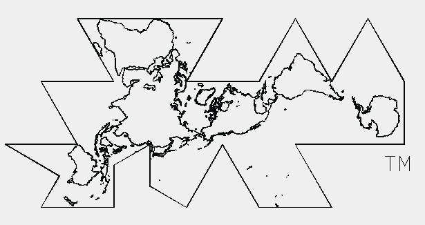
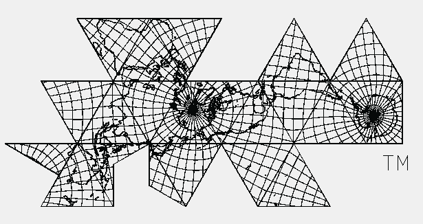
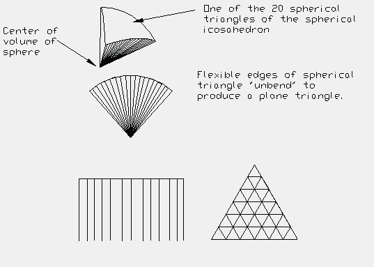

In almost every book about R. Buckminster (Bucky) Fuller, and several books by Bucky Fuller, you can find descriptions and illustrations of Fuller's world maps. His most well known world map is based on the icosahedron. Here is an image of Fuller's map in which I have removed the interior icosahedron lines.
The word Dymaxion and the Fuller Projection Dymaxion(TM) Map design are trademarks of the Buckminster Fuller Institute, Santa Barbara, California, (c) 1938, 1967 & 1992. All rights reserved. You can contact the BFI at BFI@AOL.COM Phone: (805) 962-0022, Address: 2040 Alameda Padre Serra, Suite 224, Santa Barbara, CA 93103.
Here is the same world map with a longitude latitude grid. (The quality of these images are not as sharp as I would like but I think you'll at least get the general idea.)
A color poster of the map constructed from satellite images is available from the Buckminster Fuller Institute. (Some people will argue that this poster is not a real satellite image because a real satellite image would include cloud cover. So be it. However, the image was constructed from many different satellite images and, yes, color manipulated/enhanced. In any event, the image is impressive.)
The great idea Fuller had for his "spherical" to plane map transformation was to project the polyhedron onto the sphere and then "unfold" the spherical triangle (and square in the case of the VE) into a plane polygon. Here is an illustration to help visualize this process.
Further description of a couple of transformation procedures is given in the section Different approaches to the transformation problem.
Before discussing the value of Fuller's map, or any map for that matter, we must be very careful to first remember that a map is a tool. (This is assuming you wish to discuss the map's "value" beyond being just an art poster to hang on your wall.) As a tool, it was created for a purpose. It is not appropriate to judge any map as being "good" or "bad" outside of the context in which it was intended to be used. You need to use the right tool for the job and you must judge the tool's success based on how well it does the job. Would you judge a screwdriver to be completely useless just because it doesn't work well when you try to use it to drive a nail through a piece of wood? Certainly not! You would simply be using the wrong tool for the job.
Based on Fuller's writings, it is clear that the primary function of the map was to allow people to view all of the major land masses without any of the maps borders passing through, and therefore dividing, the major land masses. Additionally, Fuller was looking for a way to do this without grossly distorting the continent's relative (to each other) overall size and shape. That is, Fuller wanted to display England and Greenland, say, in such a way as to visually appear to have the same relative size (to each other) on the flat map as their relative size on a world globe and without grossly distorting their shape. Of course their shapes ARE grossly distorted as any area is when going from a sphere to a plane. What Fuller was after was a visual appearance. Africa on the plane map should visually look like, and therefore be easily identifiable as, Africa on the world sphere.
With these goals in mind, Fuller's icosahedral based world map is a wonderful success.
Note that no mention has been made as to where the North pole nor the South pole should be located on the world map. Nor has anything been said about where each continent should be positioned with respect to one another. These considerations should therefore play no role in determining whether Fuller's world map is "good" or "bad".
Usage Note: My work is copyrighted. You may use my work but you may not include my work, or parts of it, in any for-profit project without my consent.